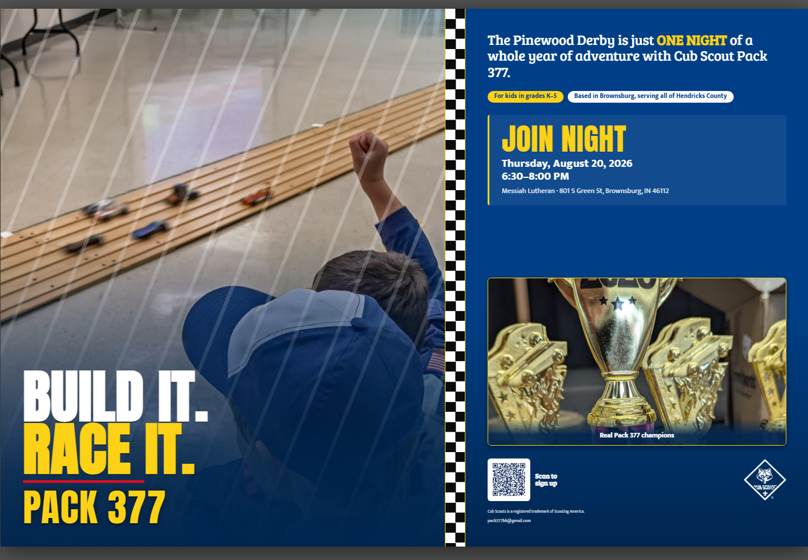
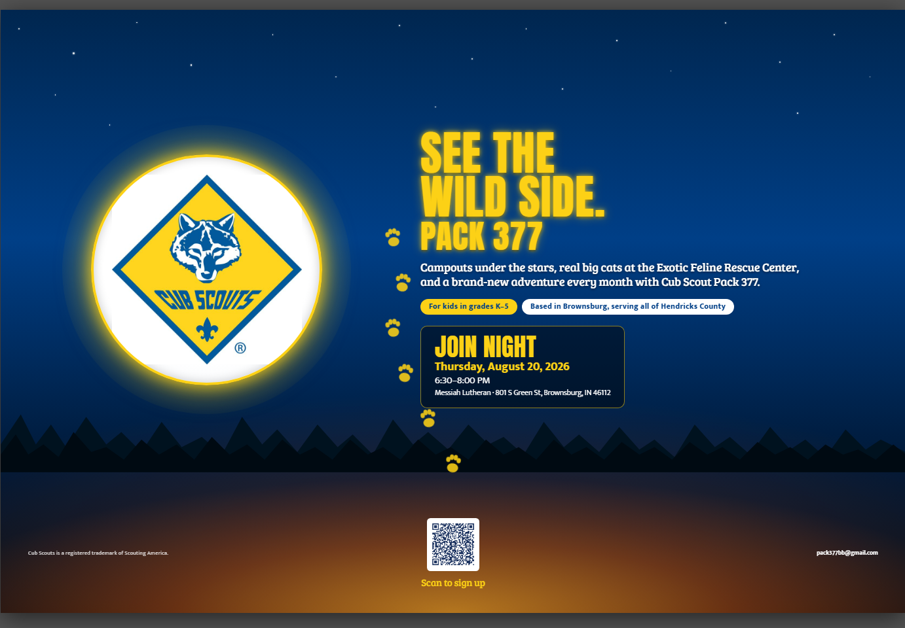
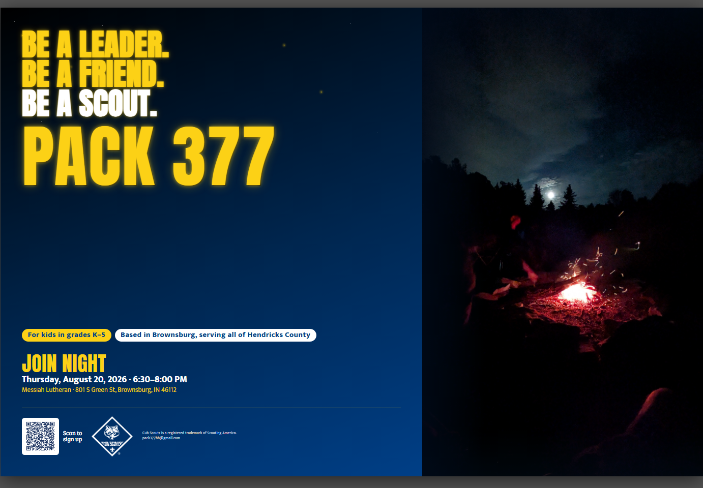

Build It. Race It.
Pinewood Derby energy — the loudest, most kid-grabbing of the three.


Three designs for our Join Night push, each in portrait and
landscape at 24×36″. Download the PDF and print at any copy shop
(they also scale down for a tabletop sign).
For kids in grades K–5 ·
Based in Brownsburg, serving all of Hendricks County.
Pinewood Derby energy — the loudest, most kid-grabbing of the three.

Campouts under the stars and the Exotic Feline Rescue trip, with the Cub Scouts emblem.


Cinematic campfire — the calmest, most premium look, with PACK 377 up big.


Cub Scouts® is a registered trademark of Scouting America. Questions? pack377bb@gmail.com